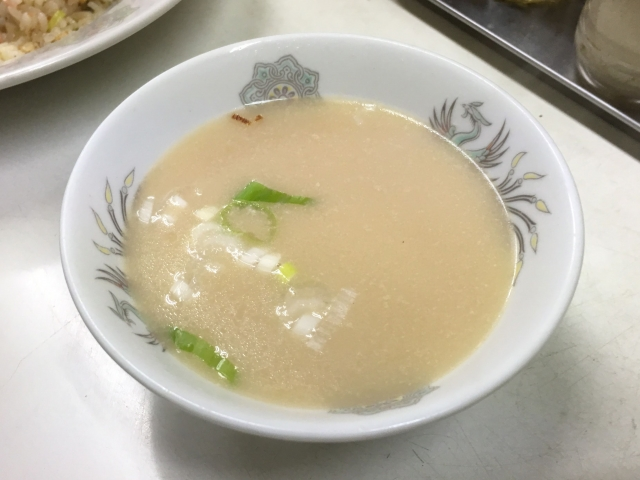
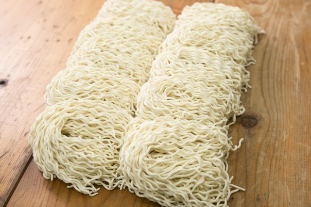
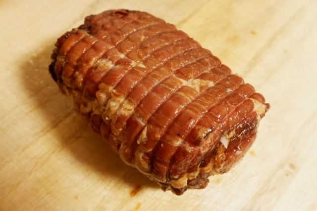

こだわり
スープへのこだわり
赤身と脂身のバランスが良い豚バラ肉を醤油ベースのタレでじっくり煮込んでいます。
豚の頭の骨と水のみを高温で炊き上げ、旨みを極限まで凝縮した頭骨100%の濃厚スープです。
掛けられるだけの手間を掛け、こだわれるだけ材料にこだわり、約１日がかりでていねいに作っているので絶品な一品となっております。
味わい深い濃厚スープに虜になること間違いなしです。

麺へのこだわり
使用する小麦は、たんぱく質含有量が13％以上で、グルテンも強靭な、豪州産の＜プライムハード＞を贅沢に使用。
あの有名なグルメ漫画「美味しんぼう」で推薦されていた中華麺用小麦の最高峰を、隣接する麺工房で、その日の湿度や気温に合わせながら手打ち。腰のある細麺の食感とスープとの絡み具合は、まさに絶品の一言です。
麺が少し縮れているため、濃厚な豚骨スープによく絡みあいより美味しさを引き立たせてくれます。

チャーシューへのこだわり
できるだけ産地や季節にこだわって、餌にもこだわって、肉そのものの旨みがある豚を選らんでいます。
さらに、醤油にもこだわって、同じものを注ぎ足して使い続けています。
脂身の美味しさも残しつつ、身の引きしまった弾力のある食べ応えにもこだわりました。
もちろん、材料はすべて無添加です。
